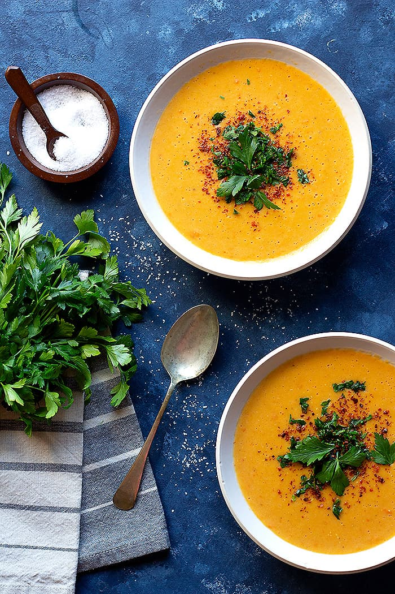

Fruit Milk

- Prep Time : 15 mins
- Cooking Time : 45 mins
- Total Time : 1 hrs
- Serving : 6
Ingredients
- 2 tablespoons olive oil
- ½ onion, diced
- 1 clove garlic, minced
- ¼ cup diced tomatoes, drained
- 5 cups chicken stock
- ½ cup red lentils
- ¼ cup fine bulgur
- ¼ cup rice
- 2 tablespoons tomato paste
- 1 teaspoon paprika
- ½ teaspoon cayenne pepper (Optional)
- 1 tablespoon dried mint
- salt and ground black pepper to taste
Directions
- Heat the olive oil in a large pot over high heat. Cook and stir the onion in the hot oil until it
begins to soften, about 2 minutes. Stir the garlic into the onion and cook another 2 minutes.
Add the diced tomatoes to the onion mixture; continue to cook and stir another 10 minutes.
- Pour in the chicken stock, red lentils, bulgur, rice, tomato paste, paprika, cayenne pepper, and
mint to the tomato mixture; season with salt and black pepper. Bring the soup to a boil, reduce heat
medium-low, and cook at a simmer until the the lentils and rice are cooked through, about 30 minutes.
- Pour the soup into a blender to no more than half full. Firmly hold the lid in place and carefully
start the blender, using a few quick pulses to get the soup moving before leaving it on to puree.
Puree in batches until smooth; pour into your serving dish. Alternately, you can use a stick blender
and puree the soup in cooking pot.
Return Main